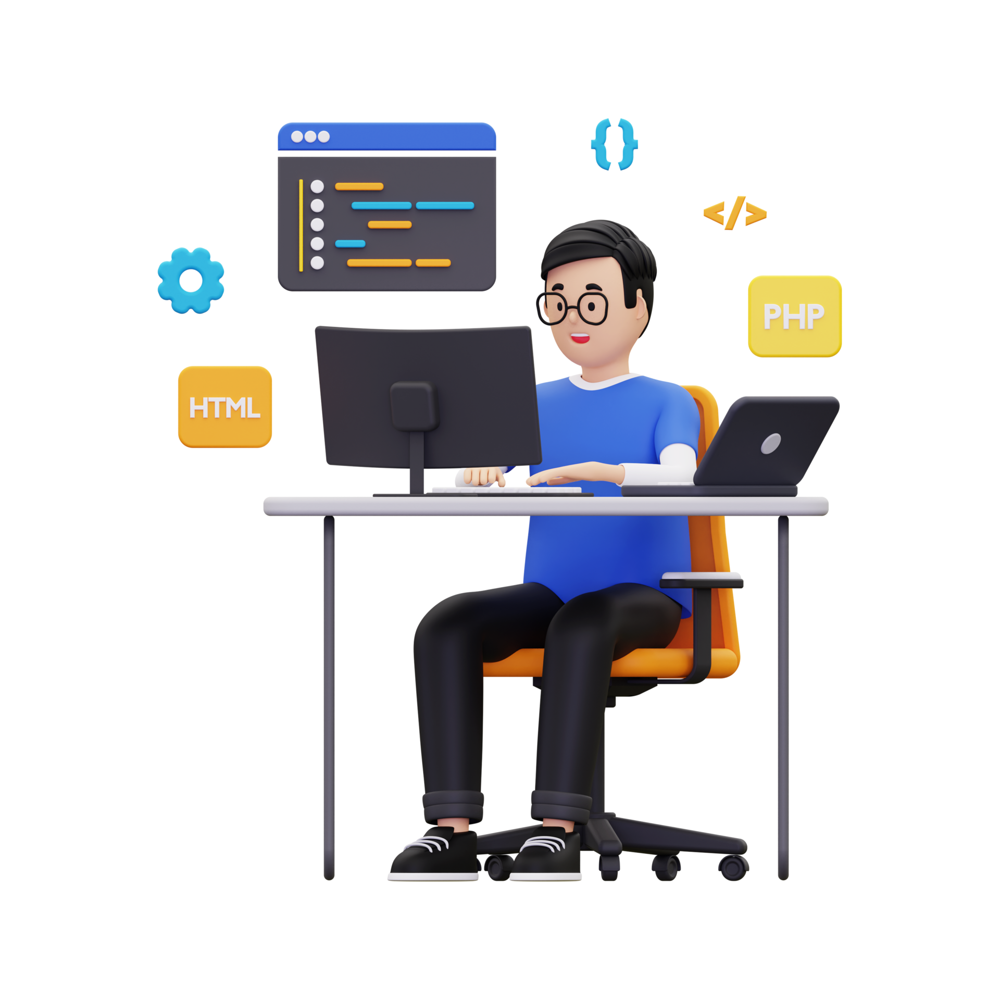

Hi, My name is Asad
and I am a passionate

Work Experience

HTML Developer (Fresh)
I recently learn HTML and build a lot of projects by using HTML.

CSS Developer (Fresh)
I also learn CSS because it will use to design our web pages.

Javascript Developer (Fresh)
Javascript is most usefull language for develop a website i have a basic knowledge of
Javascript.

Angular Developer (Fresh)
I also learn Angular to make a single page application Angular is most usefull framwork.